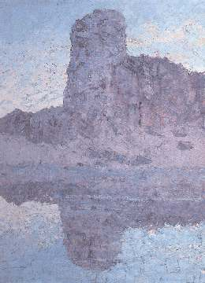
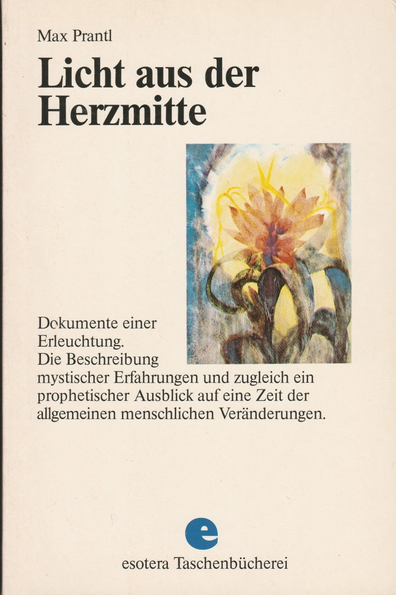
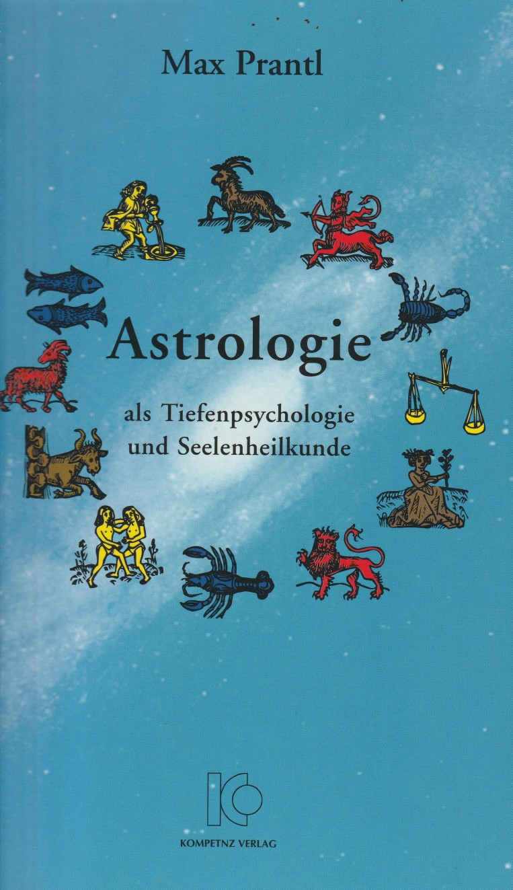
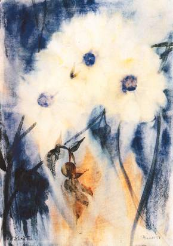

Bücher
Max Prantl's geschriebenes Werk entstammt seiner Militärzeit während dem Krieg und der Zeit danach. Es war eine Zeit der inneren Krise und Erleuchtung, durch die ihm klar wurde, was er zum Ausdruck bringen wollte. Wer Prantl's grundlegendes Werk: 'Licht aus der Herzmitte' (lange vergriffen, heute zum Glück aber wieder herausgegeben als 'Der Mensch ohne Angst - Licht aus der Herzmitte'), aber auch seine übrigen Bücher kennt, weiß um die hohe Schau dieses 1957 verstorbenen Innsbrucker Malers und Dichters. Es war sein unentwegtes Anliegen, den Menschen von heute aus dem Kerker seines irdisch verengten Verstandesdenkens hinauszuführen in die Freiheit eines Geistbewußtseins, das im innersten Wesen des Gotteskindes Mensch urständet.
Alle seine Schriften bilden tragende Pfeiler einer Brücke, die zu einem Weg in unendliche Weiten und Höhen führt - hin zu jener ewigen Heimat, von der Christus im Gleichnis vom verlorenen Sohn und seiner Rückkehr geredet hat.
Dem Schaffen Max Prantls liegt ein michaelischer Zug zugrunde: der Kampf um die Befreiung des Menschen von der Angst, die ihm - als mangelndes Vertrauen zu Gott, der Unendliche Liebe - jeden Zugang zu dem geistigen Reich in sich versperrt. Angst ist nur durch das Erwachen des Menschen zum Geistbewußtsein überwindbar. Dieses Erwachen aber führt ihn zum Erkennen und Erleben der Liebe, die als Ur-Licht und Urkraft der Gottheit in allem Geschaffenen waltet. Sie ist die Anima mundi, die 'Weltseele' ältester Geistlehren. In der christlichen Esoterik führt sie den Namen Maria: die in der Schöpfung gestaltgebende und gestaltwerdende Unendliche Liebe. Maria nicht als 'Mutter Gottes', sondern Gott als Mutter, in seinem mütterlichen Aspekt alles vom Gotteswillen Erzeugte in ihrem Schoße bergend, hegend und zur Vollendung entwickelnd.
Bemerkenswert im Schaffen Prantls ist, daß er von einem eigenen Erleben einer höheren Wirklichkeit heraus spricht. Er zeigt nicht das Empfinden einer Gefühlsregung oder Stimmung, wie eine Verzückung oder Euphorie, sondern ein wie selbstverständlich erlebtes, fast sachliches Dasein, höher und reicher als das, um das wir als materiell eingestellte Alltags-Menschen wissen. Offenbar lebt er aus einer geistigen Ebene mit einem Realitäts-Wert heraus, wo er sich Schritt um Schritt 'hineinkämpft'. Begriffe wie: Kampf, eigene Verantwortung, Sich-Entscheiden, Glaubwürdigkeit und konkret Leben aus dem inneren Licht heraus, sind für ihn selbstverständliche Elemente. Dieser Wirklichkeitssinn bildet die gewaltige Kraft seines Werks, durch das er uns Vieles zu sagen hat. Auch ist dies der Grund, warum seine Schriften die so oft als bequem empfundene Unverbindlichkeit entbehren. Während er sich auf christliche Wahrheiten gründet, ragt er zugleich über diese hinaus und ist beteiligt in einem Bereich, vor dem die traditionelle christliche Lehre immer dogmatische Schranken gesetzt hat. (Daß er sich die Kirche nicht als Freund hat bewahren können, ist eben selbstverständlich.)
Nachfolgend finden Sie eine Übersicht über die Bücher von Max Prantl. Die meisten dieser Bücher sind sehr schwer zu bekommen. Einige deutsche Buchhandlungen können möglicherweise noch ein Exemplar finden. Als letzten Ausweg können Sie sich an folgende Adresse wenden: maxprantl.n7kt3@silomails.com.
|  |
Max Prantls Hauptwerk wäre wohl “Mensch ohne Angst—Licht aus der Herzmitte” (holländisch: “Het Stralende Hart”), das ein wahrhaftes und eindringliches Dokument seiner inneren Erleuchtungsweg und der daraus hervorgehenden Erkenntnissen bildet. Keiner wird dieses Buch aus der Hand legen, ohne daß er irgendwie im Innern bewegt wäre. Weitere Information: Licht aus der Herzmitte. ISBN 3-931142-11-6 |
|  |
Astrologie als Tiefenpsychologie und Seelenheilkunde. Weitere Information: Astrologie. ISBN 3-931142-12-4 |
|
Die märchenhafte Erzählungsfülle von “Christrosen” trägt uns zu einer Welt mit einer Menge der Erlebnisse, wo wir die Wirklichkeit wieder mit unseren richtigen (geistigen) Augen schauen lernen. Beim Lesen drängen tiefe geistige Wahrheiten in uns hinein, von denen die mythischen Erzählungen gespickt sind. Bilder, bildende Erzählung, erzählende Bildung... Zum In-Einem-Atem-Auslesen, aber auch zum Immer-Wieder-Lesen. Zitate: Christrosen. |
|
|
“Unbegriffenes Licht” ist ein weiteres inhaltsreiches Werk, in dem Prantl die biblischen Evangelien und die Offenbarung des Johannes in die Sprache unserer Zeit kleidet. Es zeigt eine neue Sicht und gibt Antwort auf Fragen, die von denen gefragt werden, die sich nicht länger mit den kirchlich abgedroschenen Phrasen zufrieden geben können, und selbst nach zu denken lernen möchten. Leider ist dieses Buch im Moment schwer / unmöglich zu bekommen. Wir haben kein weitere information zum diesem Buch. Zitate: Unbegriffenes Licht. |
|
|  |
“Aus dunklen Talen,” war bis vor kurzem noch das einzige Buch von Prantl, das in deutscher Sprache zu haben war; heute aber ist auch dies vergriffen - bis auf einigen wenigen Exemplare. Neben fünf hinreißenden 'Märchen' enthält es einige wunderschöne Reproduktionen. Ein Zierat. Leider ist dieses Buch im Moment schwer / unmöglich zu bekommen, aber Sie können ein Märchen von diesem Buch, Ingemin, hier lesen: Ingemin. |